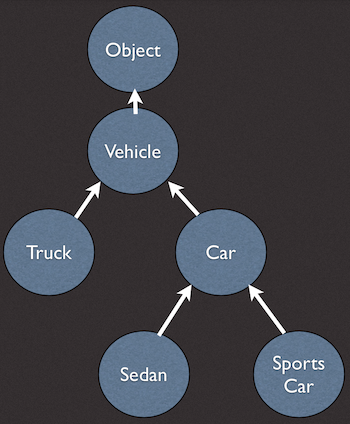

Classes: Setters & Getters - Dart 技巧， 第十集
文字稿
Hi, my name is Seth Ladd, and welcome to this episode of Dart Tips! We made it to classes! Class-based object oriented programming is an extremely common and widely deployed programming model, and Dart has first-class support for classes and inheritance. Classes is a big topic, so today we start with an intro and look at fields. Let’s get started.
When we say Dart is a class-based object oriented programming language, we mean it. Everything in Dart is an object, everything is an instance of a class, and all classes descend from Object. Dart is a single-inheritance language, which means a class can inherit from, or extend from, only one other class.
A quick primer on classes and objects. A class defines how objects look and how they behave. A class is like an idea, and to turn the idea into reality you need an object. An object is like a physical thing, something you can create from a class, and manipulate on its own. For example, think of a class like “the blueprint for all sports cars” and an object like “a specific ferarri with license plate 1234, red paint, and a current speed of 80mph”. In this way we say that an object, a specific thing, is an instance of a class, a conceptual idea.
Classes can be extended to define more specialized classes. A class hierarchy is a tree-like relationship between high level abstract concepts like Vehicle and more specific concepts like Car, and then even more specific like Sports Car.

A more specific class inherits from, or extends, a more general class. The top level of the Dart class hierarchy is Object. That is, all objects are instances of the class Object.
The Dart SDK ships with classes for everything from strings and numbers to dates and durations to abstract concepts like Type and Object. But of course, you can make your own classes! Here’s an example:
class Car {
String paintColor;
bool isRunning;
turnOn() {
if (checkKey()) {
isRunning = true;
} else {
throw new StateError('key not present');
}
}
turnOff() {
isRunning = false;
}
checkKey() {
// …
}
}
This class is named Car. It has two fields: paintColor, and isRunning. Fields are used to hold the state of an object.
This Car class has three methods: turnOn, turnOff, and checkKey. Methods are like functions that are bound to an object, and they can access an object’s state. Methods change or expose the state of an object. For example, the turnOn() method checks first if there is a key present and if so, starts the car.
To create an object from a class, you need to instantiate it. Here is an example: Notice the use of new to create a new instance of the Car class. The object is assigned to the variable named sweetRide. You can now call methods on the object:
var sweetRide = new Car(); sweetRide.paintColor = 'red'; sweetRide.turnOn(); print(sweetRide.isRunning); // true
Let’s dive into fields, or instance variables. Here is a reminder of the Car class with its two fields:
class Car {
String paintColor;
bool isRunning;
All instance variables have an implicit getter. This means that even though it looks like you’re accessing a field directly, you’re actually going through a generated getter method. Here is an example. Any non-final instance variable has an implicit setter. In other words, if the field is not final, it will have a setter method generated for it.
print(sweetRide.paintColor); // calling the paintColor getter sweetRide.paintColor = 'purple'; // calling the paintColor setter
One of the reasons I love Dart is that it does not promote generating excessive setters and getters. Of course, you always have the option to make your own getters and setters. Let’s look at how to do this, and why.
Dart wants to make it easier to evolve your API, and help you start simple and grow over time. A simple way to start is to just use fields. Here is an example:
class Car {
bool isEngineRunning;
}
var roadster = new Car();
roadster.isEngineRunning = true;
Let’s imagine that over time the class evolves to include a field for the engine.
class Car {
bool isEngineRunning;
Engine engine;
}
We can determine if the engine is running by asking the new engine field. This makes the isEngineRunning field redundant. However, if we remove isEngineRunning, we break existing users of the code. We want to change the implementation of the class without breaking backwards compatibility. This is exactly why getters and setters were introduced.
Here’s how you use them.
class Car {
Engine engine;
bool get isEngineRunning => engine.isRunning;
void set isEngineRunning(bool isRunning) {
engine.isRunning = isRunning;
}
}
Notice how the getter and setter method names are preceded by the words get and set. A getter has no parameters and returns a value, and the setter has one parameter and does not return a value.
Here’s how you use the new Car class:
var roadster = new Car(); roadster.isEngineRunning = true; print(roadster.isEngineRunning); // true
Looks familiar, right? Using setters and getters is transparent to the user of the class. This allows you to evolve your API over time without breaking existing users. The Dart way is to start simple, and scale up as you go.
Classes are a big topic, there’s much more cool stuff to cover in future episodes. For example, we’ll cover constructors, inheritance, operate overriding, and much more. Thanks for watching! I’m Seth Ladd, and as we say here on Dart Tips, stay sharp!

非常感谢 Marakana 制作该系列短视频。